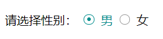

二、下拉列表select
<select name="" id="">
<option value="" selected>北京</option>
<option>上海</option>
<option>成都</option>
</select>
|
MDN:https://developer.mozilla.org/zh-CN/docs/Web/HTML/Element/button
type属性值:submit、reset、button
按钮可以是汉字、图片等多种形式
button按钮比input按钮更加灵活
五、表单状态
readonly:布尔属性，是否只读
disabled:布尔属性，是否禁用
六、配合表单元素的其他元素
6.1 label
- 显式关联
<label for="peas">Do you like peas?</label>
<input type="checkbox" name="peas" id="peas">
|
- 隐式关联
<label>Do you like peas?
<input type="checkbox" name="peas">
</label>
|
- 容纳表单元素，当提交表单时，会将from元素内部的表单内容以合适的方式提交到服务器
七、自定义单选框、多选框样式
.radio-item .radio {
width: 12px;
height: 12px;
border: 1px solid #999;
border-radius: 50%;
cursor: pointer;
display: inline-block;
}
.radio-item input:checked+.radio{
border-color: #008c8c;
}
.radio-item input:checked~span{
color:#008c8c;
}
.radio-item input:checked+.radio::after {
content: "";
display: block;
width: 5px;
height: 5px;
background: #008c8c;
margin-left: 3.5px;
margin-top: 3.5px;
border-radius: 50%;
}
.radio-item input[type="radio"]{
display: none;
}
|
<p>
请选择性别：
<label class="radio-item">
<input name="gender" type="radio">
<span class="radio"></span>
<span>男</span>
</label>
<label class="radio-item">
<input name="gender" type="radio">
<span class="radio"></span>
<span>女</span>
</label>
</p>
|
